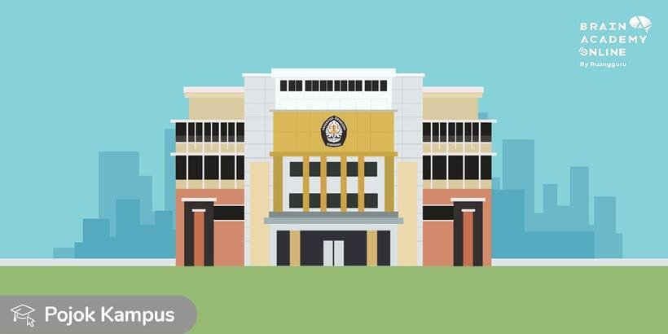

Makna Logo

Bunga melati yang warnanya putih, kecil mungil bentuknya adalah bunga suntingan Nasional Indonesia yang mempunyai arti kesucian. Kuncup melati yang sedia berkembang melambangkan sifat ke-universitasan tempat tenaga manusia berkembang, tempat menambah ilmu pengetahuan yang sifatnya juga berkembang dan sedia mengamalkan ilmunya bagi masyarakat sekitarnya. Kuncup melati yang terletak ditengah-tengah 15 helai daun bunga yang berkembang dan 10 daun kelopaknya yang berarti tanggal 15 bulan Oktober, sebagai tanggal yang dipilih untuk hari lahir Universitas Diponegoro.
Keris adalah benda budaya kepribadian Nasional Indonesia, suatu senjata yang sakti untuk pelindung dan pembasmi angkara murka. Keris yang berlatar belakang bayangan Pangeran Diponegoro mempunyai arti melindungi dan mempertahankan kemerdekaan bangsa dan tanah air. Keris dan bayangan Pangeran Diponegoro dikelilingi kupel (lengkung kubah) yang bersinar melambangkan kepahlawanan Diponegoro yang diandali kepercayaan teguh akan kebenaran dan keadilan. Lambang kepahlawanan Diponegoro yang berada di tengah-tengah lambang ke-universitasan, mempunyai arti Universitas Diponegoro sebagai tempat berkembang tenaga-tenaga kemanusiaan dan ilmu pengetahuan bercerminkan semangat kesatriya dan kepahlawanan berkepribadian nasional.
Bidang dasar segi lima (dalam bentuk khusus) dan berbingkai melambangkan Pancasila sebagai dasar negara Republik Indonesia dan Universitas Diponegoro. Diatas bidang dasar tercantum sebutan Universitas Diponegoro sebagai penegasan.
Warna adalah warna-warna nasional Indonesia, juga terdiri atas 4 warna, yaitu;
- Hitam, lambang keabadian, untuk warna dasar, inti dari keris dan pengangannya.
- Kuning emas, lambang keagungan, untuk warna bingkai, bayangan Pangeran Diponegoro.
- Merah, lambang keberanian, untuk aureool (sinar) di belakang bayangan Pangeran Diponegoro.
- Putih, lambang kesucian, untuk daun bunga dan kelopak serta nama Universitas Diponegoro Semarang.
sumber: http://mdinuad.blogspot.com/2015/03/logo-undip-dan-arti-lambang-universitas.html
Profil Kampus

Universitas Diponegoro adalah sebuah perguruan tinggi negeri di Indonesia yang berlokasi di Semarang, Jawa Tengah, Indonesia. Saat ini undip telah memiliki 11 Fakultas dan 2 Sekolah. Kampus utama undip terletak di daerah Tembalang, Kota Semarang dan kampus utama lainnya terletak di daerah Pleburan, Semarang.
Di tingkat nasional, menurut hasil SBMPTN tahun 2020, Undip menduduki peringkat 5 pada rumpun ilmu Sanis-Teknologi dengan nilai rataan tertinggi mahasiswa yang diterima sebesar 592,55 dan peringkat 5 pada rumpun ilmu Sosial-Humaniora dengan nilai rataan tertinggi mahasiswa yang diterima sebesar 583,80
Jalur Seleksi Nasional
- Jalur SNMPTN, atau biasa disebut jalur Seleksi Nasional Masuk Perguruan Tinggi Negeri ini ditujukan untuk para siswa yang berprestasi tinggi dan konsisten di SMA/SMK/MA. Data dari prestasi yang akan digunakan adalah nilai rapor dan portofolio akademik dari semester 1 sampai semester 5 selama sekolah
- Jalur SBMPTN, atau biasa disebut Seleksi Bersama Masuk Perguruan Tinggi Negeri adalah jalur masuk PTN melalui tahap tes / ujian tertulis. Ujian yang dilakukan sekarang sudah menggunakan Ujian Tulis Berbasis Komputer (UTBK).
- Jalur Ujian Mandiri, Jalur UM atau Ujian Mandiri merupakan kesempatan masuk Undip yang diberikan melalui ujian tertulis yang diseleggarakan oleh pihak Undip sendiri. Waktu pendaftaran Ujian Mandiri bisanya diadakan setelah SBMPTN. Ujian Mandiri ini dibuka dalam 2 gelombang
Fakultas dan Sekolah
Universitas Diponegoro telah memiliki 11 fakultas dan 2 sekolah, dengan rincian 21 program studi Diploma (D3), 11 program studi Diploma 4 (D4), 58 program studi Sarjana (S1), 38 program studi Magister (S2), 19 program pendidikan Dokter Spesialis, 4 Program Profesi, dan 15 program studi Doktor (S3).
Sains-Teknologi (Saintek)
- Fakultas Teknik
- Fakultas Keodkteran
- Fakultas Kesehatan Masyarakat
- Fakultas Sains dan Matematika
- Fakultas Peternakan dan Pertanian
- Fakultas Perikanan dan Ilmu Kelautan
Sosial-Humaniora (Soshum)
- Fakultas Hukum
- Fakultas Ekonomika dan Bisnis
- Fakultas Ilmu Sosial dan Ilmu Politik
- Fakultas Ilmu Budaya
- Fakultas Psikologi
Sumber: https://id.wikipedia.org/wiki/Universitas_Diponegoro